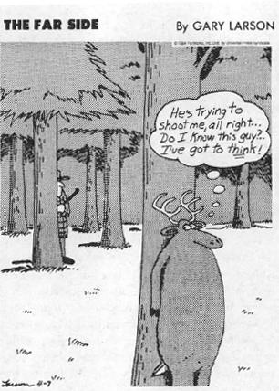

I’m old now, very old. I’ve seen a lot of things in my time and by now, I’ve forgotten a lot of them but, I tell you, that was one day that I’ll remember forever like it was yesterday. I was twenty-four, maybe twenty-five. It was a cold spring morning. Raw, gray. Gray sky, gray slush, gray people. I was looking for a job again and not having much luck, my stomach complaining about the bad rooming house coffee that was last night’s dinner and today’s breakfast. I was feeling pretty hungry, and I suspect I was starting to look pretty hungry too, like some half-starved animal that picks through a garbage can, and that couldn’t make much of an impression in an interview. And neither could the shabby jacket I was wearing, that last one I hadn’t hocked.
I’m old now, very old. I’ve seen a lot of things in my time and by now, I’ve forgotten a lot of them but, I tell you, that was one day that I’ll remember forever like it was yesterday. I was twenty-four, maybe twenty-five. It was a cold spring morning. Raw, gray. Gray sky, gray slush, gray people. I was looking for a job again and not having much luck, my stomach complaining about the bad rooming house coffee that was last night’s dinner and today’s breakfast. I was feeling pretty hungry, and I suspect I was starting to look pretty hungry too, like some half-starved animal that picks through a garbage can, and that couldn’t make much of an impression in an interview. And neither could the shabby jacket I was wearing, that last one I hadn’t hocked.
I was plodding along, lost in my thoughts, when some guy comes sprinting around the corner, yelling with excitement, hands up in the air. Before I could even get a good look at him, he was shouting in my face. He was babbling, yelling about something being “classic,” something called “classic.” I couldn’t understand what he was talking about, and then he sprinted off. What the hell, crazy guy, I thought.
But round the next corner, I see more people running around, yelling. Two of them, a man and woman, come running up to me and, by now, I tell you, I knew that something was up. They grabbed me by the arms, shouting “We won! We won!! We’re getting it back!” They were pretty excited but at least making more sense than the first guy, and I finally figured out what they were saying. I couldn’t believe it. I tried to speak, but I got all choked up, so I hugged them as if they were my brother and sister. The three of us ran into the street, where a big crowd was forming—people coming out of the office buildings, people stopping their cars, jumping out. Everyone screaming and crying and laughing, people shouting, “We won! We won!” Somebody told me a pregnant woman had gone right into labor, another that some old man had fainted right away. I saw a bunch of Navy guys, and one of them stepped right up and kissed this woman, a total stranger, leaning her way back—someone snapped a picture of them kissing, and I heard it became famous afterward.
The weird thing is how long ago this was—the couple who first told me are probably long gone, but I can still see their faces, remember how they were dressed, the smell of the guy’s aftershave, the feel of the breeze that was blowing the confetti that people were tossing out the windows above. Still vivid. The mind’s a funny thing. Well anyway, as I was saying, that’s a day I’ll always remember—the day they brought back the original Coke.
A day to remember!
We’ve all had similar experiences. Your first kiss. Your wedding ceremony. The moment when the war ended. And the same for the bad moments as well. The fifteen seconds when those two guys mugged you. The time the car spun out of control and just missed the oncoming truck. Where you were when the earthquake hit, when Kennedy was shot, on 9/11. All etched forever in your mind, when it’s inconceivable that you can recall the slightest thing about incidents in the twenty-four hours before that life-changing event. Arousing, exciting, momentous occasions, including stressful ones, get filed away readily. Stress can enhance memory.
At the same time, we’ve all had the opposite experience. You’re in the middle of the final exam, nervous and frazzled, and you simply can’t remember a fact that would come effortlessly at any other time. You’re in some intimidating social circumstance, and, of course, at the critical moment, you can’t remember the name of the person you have to introduce. The first time I was “brought home” to meet my future wife’s family, I was nervous as hell; during a frantically competitive word game after dinner, I managed to blow the lead of the team consisting of my future mother-in-law and me by my utter inability at one critical juncture to remember the word casserole. And some of these instances of failed memory revolve around infinitely greater traumas—the combat vet who went through some unspeakable battle catastrophe, the survivor of childhood sexual abuse—for whom the details are lost in an amnesiac fog. Stress can disrupt memory.
By now, this dichotomy should seem quite familiar. If stress enhances some function under one circumstance and disrupts it under another, think time course, think 30-second sprints across the savanna versus decades of grinding worry. Short-term stressors of mild to moderate severity enhance cognition, while major or prolonged stressors are disruptive. In order to appreciate how stress affects memory, we need to know something about how memories are formed (consolidated), how they are retrieved, how they can fail.
A Primer on How Memory Works
To begin, memory is not monolithic, but instead comes in different flavors. One particularly important dichotomy distinguishes short-term versus long-term memories. With the former, you look up a phone number, sprint across the room convinced you’re about to forget it, punch in the number. And then it’s gone forever. Short-term memory is your brain’s equivalent of juggling some balls in the air for 30 seconds. In contrast, long-term memory refers to remembering what you had for dinner last night, the name of the U.S. president, how many grandchildren you have, where you went to college. Neuropsychologists are coming to recognize that there is a specialized subset of long-term memory. Remote memories are ones stretching back to your childhood—the name of your village, your native language, the smell of your grandmother’s baking. They appear to be stored in some sort of archival way in your brain separate from more recent long-term memories. Often, in patients with a dementia that devastates most long-term memory, the more remote facets can remain intact.
Another important distinction in memory is that between explicit (also known as declarative) memory and implicit (which includes an important subtype called procedural memory) memory. Explicit memory concerns facts and events, along with your conscious awareness of knowing them: I am a mammal, today is Monday, my dentist has thick eyebrows. Things like that. In contrast, implicit procedural memories are about skills and habits, about knowing how to do things, even without having to think consciously about them: shifting the gears on a car, riding a bicycle, doing the fox-trot. Memories can be transferred between explicit and implicit forms of storage. For example, you are learning a new, difficult passage from a piece of piano music. Each time that stretch approaches, you must consciously, explicitly remember what to do—tuck your elbow in, bring your thumb way underneath after that trill. And one day, while playing, you realize you just barreled through that section flawlessly, without having to think about it: you did it with implicit, rather than explicit, memory. For the first time, it’s as if your hands remember better than your brain does.
Memory can be dramatically disrupted if you force something that’s implicit into explicit channels. Here’s an example that will finally make reading this book worth your while—how to make neurobiology work to your competitive advantage at sports. You’re playing tennis against someone who is beating the pants off of you. Wait until your adversary has pulled off some amazing backhand, then offer a warm smile and say, “You are a fabulous tennis player. I mean it; you’re terrific. Look at that shot you just made. How did you do that? When you do a backhand like that, do you hold your thumb this way or that, and what about your other fingers? And how about your butt, do you scrunch up the left side of it and put your weight on your right toes, or the other way around?” Do it right, and the next time that shot is called for, your opponent/victim will make the mistake of thinking about it explicitly, and the stroke won’t be anywhere near as effective. As Yogi Berra once said, “You can’t think and hit at the same time.” Imagine descending a flight of stairs in an explicit manner, something you haven’t done since you were two years old—okay, bend my left knee and roll the weight of my toes forward while shifting my right hip up slightly—and down you go down the stairs.
Just as there are different types of memory, there are different areas of the brain involved in memory storage and retrieval. One critical site is the cortex, the vast and convoluted surface of the brain. Another is a region tucked just underneath part of the cortex, called the hippocampus. (That’s Latin for “sea horse,” which the hippocampus vaguely resembles if you’ve been stuck inside studying neuroanatomy for too long instead of going to the seashore. It actually looks more like a jelly roll, but who knows the Latin term for that?) Both of these are regions vital to memory—for example, it is the hippocampus and cortex that are preferentially damaged in Alzheimer’s disease. If you want a totally simplistic computer metaphor, think of the cortex as your hard drive, where memories are stored, and your hippocampus as the keyboard, the means by which you place and access memories in the cortex.
There are additional brain regions relevant to a different kind of memory. These are structures that regulate body movements. What do these sites, such as the cerebellum, have to do with memory? They appear to be relevant to implicit procedural memory, the type you need to perform reflexive, motor actions without even consciously thinking about them, where, so to speak, your body remembers how to do something before you do.
The distinction between explicit and implicit memory, and the neuroanatomical bases of that distinction, was first really appreciated because of one of the truly fascinating, tragic figures in neurology, perhaps the most famous neurological patient of all time. This man, known in the literature only by his initials, is missing most of his hippocampus. As an adolescent in the 1950s, “H.M.” had a severe form of epilepsy that was centered in his hippocampus and was resistant to drug treatments available at that time. In a desperate move, a famous neurosurgeon removed a large part of H.M.’s hippocampus, along with much of the surrounding tissue. The seizures mostly abated, and in the aftermath, H.M. was left with a virtually complete inability to turn new short-term memories into long-term ones—mentally utterly frozen in time.* Zillions of studies of H.M. have been carried out since, and it has slowly become apparent that despite this profound amnesia, H.M. can still learn how to do some things. Give him some mechanical puzzle to master day after day, and he learns to put it together at the same speed as anyone else, while steadfastly denying each time that he has ever seen it before. Hippocampus and explicit memory are shot; the rest of the brain is intact, as is his ability to acquire a procedural memory.
This shifts us to the next magnification of examining how the brain handles memories and how stress influences the process—what’s going on at the level of clusters of neurons within the cortex and hippocampus? A long-standing belief among many who studied the cortex was that each individual cortical neuron would, in effect, turn out to have a single task, a single fact that it knew. This was prompted by some staggeringly important work done in the 1960s by David Hubel and Torstein Wiesel of Harvard on what was, in retrospect, one of the simpler outposts of the cortex, an area that processed visual information. They found a first part of the visual cortex in which each neuron responded to one thing and one thing only, namely a single dot of light on the retina. Neurons that responded to a sequence of adjacent dots of light would funnel their projections to one neuron in the next layer. And thus, what was this neuron responding to? A straight line. A series of these neurons would project to the next level in a way that each neuron in that cortical level would respond to a particular moving line of light. This led people to believe that there would be a fourth level, where each neuron responded to a particular collection of lines, and a fifth and sixth layer, all the way up until, at the umpteenth layer, there would be a neuron that responded to one thing and one thing only, namely your grandmother’s face at a particular angle (and next to it would be a neuron that recognized her face at a slightly different angle, and then the next one…). People went looking for what were actually called “grandmother” neurons—neurons way up in the layers of the cortex that “knew” one thing and one thing only, namely a complexly integrated bit of sensory stimulation. With time, it became apparent that there could be very few such neurons in the cortex, because you simply don’t have enough neurons to go around to allow each one to be so narrow-minded and overspecialized.
A highly hypothetical neural network involving a neuron that “knows” about Impressionist paintings.
Rather than memory and information being stored in single neurons, they are stored in the patterns of excitation of vast arrays of neurons—in trendy jargon, in neuronal “networks.” How does one of these work? Consider the wildly simplified neural network shown in the diagram above.
The first layer of neurons (neurons 1, 2, and 3) are classical Hubel and Wiesel type neurons, which is to say that each one “knows” one fact for a living. Neuron 1 knows how to recognize Gauguin paintings, 2 recognizes van Gogh, and 3 knows Monet. (Thus, these hypothetical neurons are more “grandmotherly”—specializing in one task—than any real neurons in the brain, but help illustrate well what neural networks are about.) Those three neurons project—send information to—the second layer in this network, comprising neurons A to E. Note the projection pattern: 1 talks to A, B, and C; 2 talks to B, C, and D; 3 talks to C, D, and E.
What “knowledge” does neuron A have? It gets information only from neuron 1 about Gauguin paintings. Another grandmotherly neuron. Similarly, E gets information only from neuron 3 and knows only about Monet. But what about neuron C; what does it know about? It knows about Impressionism, the features that these three painters had in common. It’s the neuron that, metaphorically, says, “I can’t tell you the painter, certainly not the painting, but it’s one of those Impressionists.” It has knowledge that does not come from any single informational input, but emerges from the convergence of information feeding into it. Neurons B and D are also Impressionism neurons, but they’re just not as good at it as neuron C, because they have fewer examples to work with. Most neurons in your cortex process memory like neurons B through D, not like A or E.
We take advantage of such convergent networks whenever we are trying to pull out a memory that is almost, almost there. Continuing our art history theme, suppose you’re trying to remember the name of a painter, that guy, what’s his name. He was that short guy with a beard (activating your “short guy” neural network, and your “bearded guy” network). He painted all those Parisian dancers; it wasn’t Degas (two more networks pulled in). My high school art appreciation teacher loved that guy; if I can remember her name, I bet I can remember his…wow, remember that time I was at the museum and there was that really cute person I tried to talk to in front of one of his paintings…oh, what was the stupid pun about that guy’s name, about the train tracks being too loose. With enough of those nets being activated, you finally stumble into the one fact that is at the intersection of all of them: Toulouse-Lautrec, the equivalent of a neuron C.
That’s a rough approximation of how a neural network operates, and neuroscientists have come to think of both learning and storing of memories as involving the “strengthening” of some branches rather than others of a network. How does such strengthening occur? For that, we switch to a final level of magnification, to consider the tiny gaps between the thready branches of two neurons, gaps called synapses. When a neuron has heard some fabulous gossip and wants to pass it on, when a wave of electrical excitation sweeps over it, this triggers the release of chemical messengers—neurotransmitters—that float across the synapse and excite the next neuron. There are dozens, probably hundreds, of different kinds of neurotransmitters, and synapses in the hippocampus and cortex disproportionately make use of what is probably the most excitatory neurotransmitter there is, something called glutamate.
Besides being superexcitatory, “glutamatergic” synapses have two properties that are critical to memory. The first is that these synapses are nonlinear in their function. What does this mean? In a run-of-the-mill synapse, a little bit of neurotransmitter comes out of the first neuron and causes the second neuron to get a little excited; if a smidgen more neurotransmitter is released, there is a smidgen more excitation, and so on. In glutamatergic synapses, some glutamate is released and nothing happens. A larger amount is released, nothing happens. It isn’t until a certain threshold of glutamate concentration is passed that, suddenly, all hell breaks loose in the second neuron and there is a massive wave of excitation. This is what learning something is about. A professor drones on incomprehensibly in a lecture, a fact goes in one ear and out the other. It is repeated again—and, again, it fails to sink in. Finally, the hundredth time it is repeated, a lightbulb goes on, “Aha!” and you get it. On a simplistic level, when you finally get it, that nonlinear threshold of glutamate excitation has just been reached.
The second feature is even more important. Under the right conditions, when a synapse has just had a sufficient number of superexcitatory glutamate-driven “aha’s,” something happens. The synapse becomes persistently more excitable, so that next time it takes less of an excitatory signal to get the aha. That synapse just learned something; it was “potentiated,” or strengthened. The most amazing thing is that this strengthening of the synapse can persist for a long time. A huge number of neuroscientists flail away at figuring out how this process of “long-term potentiation” works.
There’s increasing evidence that the formation of new memories might also sometimes arise from the formation of new connections between neurons (in addition to the potentiating of pre-existing ones) or, even more radically, the formation of new neurons themselves. This latter, controversial idea is discussed below. For the moment, this is all you need to know about how your brain remembers anniversaries and sports statistics and the color of someone’s eyes and how to waltz. We can now see what stress does to the process.
Improving Your Memory
During Stress
The first point, of course, is that mild to moderate short-term stressors enhance memory. This makes sense, in that this is the sort of optimal stress that we would call “stimulation”—alert and focused. This effect has been shown in laboratory animals and in humans. One particularly elegant study in this realm was carried out by Larry Cahill and James McGaugh at the University of California at Irvine. Read a fairly unexciting story to a group of control subjects: a boy and his mother walk through their town, pass this store and that one, cross the street and enter the hospital where the boy’s father works, are shown the X-ray room…and so on. Meanwhile, the experimental subjects are read a story that differs in that the central core of it contains some emotionally laden material: a boy and his mother walk through their town, pass this store and that one, cross the street where…the boy is hit by a car! He’s rushed to the hospital and taken to the X-ray room…. Tested weeks later, the experimental subjects remember their story better than do the controls, but only the middle, exciting part. This fits with the picture of “flashbulb memory,” in which people vividly remember some highly aroused scene, such as a crime they witnessed. Memory for the emotional components is enhanced (although the accuracy isn’t necessarily all that good), whereas memory for the neutral details is not.
This study also indicated how this effect on memory works. Hear the stressful story and a stress-response is initiated. As we by now well know, this includes the sympathetic nervous system kicking into gear, pouring epinephrine and norepinephrine into the bloodstream. Sympathetic stimulation appears to be critical, because when Cahill and McGaugh gave subjects a drug to block that sympathetic activation (the beta-blocker propranolol, the same drug used to lower blood pressure), the experimental group did not remember the middle portion of their story any better than the controls remembered theirs. Importantly, it’s not simply the case that propranolol disrupts memory formation. Instead, it disrupts stress-enhanced memory formation (in other words, the experimental subjects did as well as the controls on the boring parts of the story, but simply didn’t have the boost in memory for the emotional middle section).
The sympathetic nervous system pulls this off by indirectly arousing the hippocampus into a more alert, activated state, facilitating memory consolidation. This involves an area of the brain that is going to become central to understanding anxiety when we get to chapter 15, namely the amygdala. The sympathetic nervous system has a second route for enhancing cognition. Tons of energy are needed for all that explosive, nonlinear, long-term potentiating, that turning on of light-bulbs in your hippocampus with glutamate. The sympathetic nervous system helps those energy needs to be met by mobilizing glucose into the bloodstream and increasing the force with which blood is being pumped up into the brain.
These changes are quite adaptive. When a stressor is occuring it is a good time to be at your best in memory retrieval (“How did I get out of this mess last time?”) and memory formation (“If I survive this, I’d better remember just what I did wrong so I don’t get into a mess like this again.”). So stress acutely causes increased delivery of glucose to the brain, making more energy available to neurons, and therefore better memory formation and retrieval.

Thus, the sympathetic arousal during stress indirectly fuels the expensive process of remembering the faces of the crowd chanting ecstatically about Classic Coke. In addition, a mild elevation in glucocorticoid levels (the type you would see during a moderate, short-term stressor) helps memory as well. This occurs in the hippocampus, where those moderately elevated glucocorticoid levels facilitate long-term potentiation. Finally, there are some obscure mechanisms by which moderate, short-term stress makes your sensory receptors more sensitive. Your taste buds, your olfactory receptors, the cochlear cells in your ears all require less stimulation to get excited under moderate stress and pass on the information to your brain. In that special circumstance, you can pick up the sound of a can of soda being opened hundreds of yards away.
Anxiety: Some Foreshadowing
What we’ve just seen is how moderate and transient stress can enhance the sort of explicit memories that are the purview of the hippocampus. It turns out that stress can enhance another type of memory. This is one relevant to emotional memories, a world apart from the hippocampus and its dull concern with factoids. This alternative type of memory, and its facilitation by stress, revolves around that brain area mentioned before, the amygdala. The response of the amygdala during stress is going to be critical to understanding anxiety and post-traumatic stress disorder in chapter 15.
And When Stress
Goes on for Too Long
With our “sprinting across the savanna” versus “worrying about a mortgage” dichotomy loaded and ready, we can now look at how the formation and retrieval of memories goes awry when stressors become too big or too prolonged. People in the learning and memory business refer to this as an “inverse-U” relationship. As you go from no stress to a moderate, transient amount of stress—the realm of stimulation—memory improves. As you then transition into severe stress, memory declines.
The decline has been shown in numerous studies with lab rats, and with an array of stressors—restraint, shock, exposure to the odor of a cat. The same has been shown when high levels of glucocorticoids are administered to rats instead. But this may not tell us anything interesting. Lots of stress or of glucocorticoids may just be making for a generically messed-up brain. Maybe the rats would now be lousy at tests of muscle coordination, or responsiveness to sensory information, or what have you. But careful control studies have shown that other aspects of brain function, such as implicit memory, are fine. Maybe it’s not so much that learning and memory are impaired, as much as the rat being so busy paying attention to that cat smell, or so agitated by it, that it doesn’t make much headway solving whatever puzzle is in front of it. And within that realm of explicit memory problems, the retrieval of prior memories seems more vulnerable to stress than the formation of new ones. Similar findings have been reported with nonhuman primates.
Hard-charging businessman Billy Sloan is about to learn that continued stress does inhibit one’s memory.
What about humans? Much the same. In a disorder called Cushing’s syndrome, people develop one of a number of types of tumors that result in secretion of tons of glucocorticoids. Understand what goes wrong next in a “Cushingoid” patient and you understand half of this book—high blood pressure, diabetes, immune suppression, reproductive problems, the works. And it’s been known for decades that they get memory problems, specifically explicit memory problems, known as Cushingoid dementia. As we saw in chapter 8, synthetic glucocorticoids are often administered to people to control autoimmune or inflammatory disorders. With prolonged treatment, you see explicit memory problems as well. But maybe this is due to the disease, rather than to the glucocorticoids that were given for the disease. Pamela Keenan of Wayne State University has studied individuals with these inflammatory diseases, comparing those treated with steroidal anti-inflammatory compounds (that is, glucocorticoids) and those getting nonsteroidals; memory problems were a function of getting the glucocorticoids, not of the disease.
As the clearest evidence, just a few days of high doses of synthetic glucocorticoids impairs explicit memory in healthy volunteers. As one problem in interpreting these studies, these synthetic hormones work a bit differently from the real stuff, and the levels administered produce higher circulating glucocorticoid levels than the body normally produces, even during stress. Importantly, stress itself, or infusion of stress levels of the type of glucocorticoid that naturally occurs in humans, disrupts memory as well. As with the nonhuman studies, implicit memory is fine, and it’s the recall, the retrieval of prior information, that is more vulnerable than the consolidation of new memories.
There are also findings (although fewer in number) showing that stress disrupts something called “executive function.” This is a little different from memory. Rather than this being the cognitive realm of storing and retrieving facts, this concerns what you do with the facts—whether you organize them strategically, how they guide your judgments and decision making. This is the province of a part of the brain called the prefrontal cortex. We’ll be returning to this in considerable detail in chapter 16 when we consider what stress may have to do with decision making and impulse control.
The Damaging Effects of
Stress in the Hippocampus
How does prolonged stress disrupt hippocampal-dependent memory? A hierarchy of effects have been shown in laboratory animals:
First, hippocampal neurons no longer work as well. Stress can disrupt long-term potentiation in the hippocampus even in the absence of glucocorticoids (as in a rat whose adrenal glands have been removed), and extreme arousal of the sympathetic nervous system seems responsible for this. Nonetheless, most of the research in this area has focused on the glucocorticoids. Once glucocorticoid levels go from the range seen for mild or moderate stressors to the range typical of big-time stress, the hormone no longer enhances long-term potentiation, that process by which the connection between two neurons “remembers” by becoming more excitable. Instead, glucocorticoids now disrupt the process. Furthermore, similarly high glucocorticoid levels enhance something called long-term depression, which might be a mechanism underlying the process of forgetting, the flip side of hippocampal aha-ing.
How can it be that increasing glucocorticoid levels a little bit (during moderate stressors) does one thing (enhances the potentiation of communication between neurons), while increasing glucocorticoid levels a lot does the opposite? In the mid-1980s, Ron de Kloet of the University of Utrecht in the Netherlands discovered the very elegant answer. It turns out that the hippocampus has large amounts of two different types of receptors for glucocorticoids. Critically, the hormone is about ten times better at binding to one of the receptors (thus termed a “high-affinity” receptor) than the other. What that means is that if glucocorticoid levels only rise a little bit, most of the hormone effect in the hippocampus will be mediated by that high-affinity receptor. In contrast, it is not until you are dealing with a major stressor that the hormone activates a lot of the “low-affinity” receptor. And, logically, it turns out that activation of the high-affinity receptor enhances long-term potentiation, while activation of the low-affinity one does the opposite. This is the basis of the “inverse-U” property mentioned above.
Neurons of the hippocampus of a rat. On the left, healthy neurons; on the right, neurons with their projections atrophied by sustained stress.
In the previous section, I noted that the brain region called the amygdala plays a central role in the types of emotional memories involved in anxiety. But the amygdala is relevant here as well. The amygdala gets highly activated during major stressors and sends a large, influential neuronal projection to the hippocampus. Activation of this pathway seems to be a prerequisite for stress to disrupt hippocampal function. Destroy a rat’s amygdala, or sever its connection to the hippocampus, and stress no longer impairs the kind of memory that the hippocampus mediates, even amid the usual high glucocorticoid levels. This explains a finding that harks back to the subject of stress “signatures,” and also demonstrates that some activities can represent a challenge to physical allostasis without being psychologically aversive. For example, sex raises glucocorticoid levels in a male rat—without activating the amygdala and without disrupting hippocampal function.
Second, neural networks get disconnected. If you look back at the diagram on the “Impressionism neuron”, you’ll see that there are symbols indicating how one neuron talks to another, “projects” to it. As mentioned a few paragraphs after that, those projections are quite literal—long multibranched cables coming out of neurons that form synapses with the multibranched cables of other neurons. These cables (known as axons and dendrites) are obviously at the heart of neuronal communication and neuronal networks. Bruce McEwen has shown that, in a rat, after as little as a few weeks of stress or of exposure to excessive glucocorticoids, those cables begin to shrivel, to atrophy and retract a bit. Moreover, the same can occur in the primate brain. When that happens, synaptic connections get pulled apart and the complexity of your neural networks declines. Fortunately, it appears that at the end of the stressful period, the neurons can dust themselves off and regrow those connections.
This transient atrophy of neuronal processes probably explains a characteristic feature of memory problems during chronic stress. Destroy vast acres of neurons in the hippocampus after a massive stroke or late terminal stage Alzheimer’s disease, and memory is profoundly impaired. Memories can be completely lost, and never again will these people remember, for example, something as vital as the names of their spouses. “Weaken” a neural network during a period of chronic stress by retracting some of the complex branches in those neuronal trees, and the memories of Toulouse-Lautrec’s name are still there. You simply have to tap into more and more associative cues to pull it out, because any given network is less effective at doing its job. Memories are not lost, just harder to access.
Third, the birth of new neurons is inhibited. If you learned your introductory neurobiology any time in the last thousand years, one fact that would be hammered in repeatedly is that the adult brain doesn’t make new neurons. In the last decade, it has become clear that this is utterly wrong.* As a result, the study of “adult neurogenesis” is now, arguably, the hottest topic in neuroscience.
Two features about such neurogenesis are highly relevant to this chapter. First, the hippocampus is one of only two sites in the brain where these new neurons originate.* Second, the rate of neurogenesis can be regulated. Learning, an enriched environment, exercise, or exposure to estrogen all increase the rate of neurogenesis, while the strongest inhibitors identified to date are, you guessed it, stress and glucocorticoids—as little as a few hours of either in a rat.
Two key questions arise. First, when the stress stops, does neurogenesis recover and, if so, how fast? No one knows yet. Second, what does it matter that stress inhibits adult neurogenesis? Intrinsic in this question is the larger question of what adult neurogenesis is good for. This is incredibly controversial, an issue that has adversaries practically wrestling each other on the podium during scientific conferences. At one extreme are studies that suggest that under the right conditions, there are tons of neurogenesis in the adult hippocampus, that these new neurons form connections with other neurons, and that these new connections, in fact, are needed for certain types of learning. At the other extreme, every one of these findings is questioned. So the jury’s out on this one.
Fourth, hippocampal neurons become endangered. As noted, within seconds of the onset of stress, glucose delivery throughout the brain increases. What if the stressor continues? By about thirty minutes into a continuous stressor, glucose delivery is no longer enhanced, and has returned to normal levels. If the stressor goes on even longer, the delivery of glucose to the brain is even inhibited, particularly in the hippocampus. Delivery is inhibited about 25 percent, and the effect is due to glucocorticoids.*
Decreasing glucose uptake to this extent in a healthy, happy neuron is no big deal. It just makes the neuron a little queasy and lightheaded. But what if the neuron isn’t healthy and happy, and is instead in the middle of a neurological crisis? It’s now more likely to die than usual.
Glucocorticoids will compromise the ability of hippocampal neurons to survive an array of insults. Take a rat, give it a major epileptic seizure, and the higher the glucocorticoid levels at the time of the seizure, the more hippocampal neurons will die. Same thing for cardiac arrest, where oxygen and glucose delivery to the brain is cut off, or for a stroke, in which a single blood vessel in the brain shuts down. Same for concussive head trauma, or drugs that generate oxygen radicals. Disturbingly, same thing for the closest there is to a rat neuron’s equivalent of being damaged by Alzheimer’s disease (exposing the neuron to fragments of an Alzheimer’s-related toxin called beta-amyloid). Same for a rat hippocampus’s equivalent of having AIDS-related dementia (induced by exposing the neuron to a damaging constituent of the AIDS virus called gp120).*
My lab and others have shown that the relatively mild energy problem caused by that inhibition of glucose storage by glucocorticoids or stress makes it harder for a neuron to contain the eleventy things that go wrong during one of these neurological insults. All of these neurological diseases are ultimately energy crises for a neuron: cut off the glucose to a neuron (hypoglycemia), or cut off both the glucose and oxygen (hypoxia-ischemia), or make a neuron work like mad (a seizure) and energy stores drop precipitously. Damaging tidal waves of neurotransmitters and ions flood into the wrong places, oxygen radicals are generated. If you throw in glucocorticoids on top of that, the neuron is even less able to afford to clean up the mess. Thanks to that stroke or seizure, today’s the worst day of that neuron’s life, and it goes into the crisis with 25 percent less energy in the bank than usual. Finally, there is now evidence that truly prolonged exposure to stress or glucocorticoids can actually kill hippocampal neurons. The first hints of this came in the late 1960s. Two researchers showed that if guinea pigs are exposed to pharmacological levels of glucocorticoids (that is, higher levels than the body ever normally generates on its own), the brain is damaged. Oddly, damage was mainly limited to the hippocampus. This was right around the time that Bruce McEwen was first reporting that the hippocampus is loaded with receptors for glucocorticoids and no one really appreciated yet how much the hippocampus was the center in the brain for glucocorticoid actions.
Beginning in the early 1980s, various researchers, including myself, showed that this “glucocorticoid neurotoxicity” was not just a pharmacological effect, but was relevant to normal brain aging in the rat. Collectively, the studies showed that lots of glucocorticoid exposure (in the range seen during stress) or lots of stress itself would accelerate the degeneration of the aging hippocampus. Conversely, diminishing glucocorticoid levels (by removing the adrenals of the rat) would delay hippocampal aging. And as one might expect by now, the extent of glucocorticoid exposure over the rat’s lifetime not only determined how much hippocampal degeneration there would be in old age, but how much memory loss as well.
Where do glucocorticoids and stress get off killing your brain cells? Sure, stress hormones can make you sick in lots of ways, but isn’t neurotoxicity going a bit beyond the bounds of good taste? A dozen years into studying the phenomenon, we’re not yet sure.
What About Damage
to the Human Hippocampus?
We know from earlier in this chapter that an excess of stress and/or glucocorticoids can disrupt functioning of the hippocampus. Is there any evidence that this can include the sort of overt damage to the hippocampus that we’ve been discussing? That is, can it disconnect neural networks by the atrophying of processes, inhibit the birth of new neurons, worsen the neuron death caused by other neurological insults, or overtly kill neurons?
To date, six sets of findings in humans should raise some worries:
1. Cushing’s syndrome. As discussed above, Cushing’s involves any of a number of types of tumors that produce a vast, damaging excess of glucocorticoids, where the consequences include impairment of hippocampal-dependent memory. Monica Starkman at the University of Michigan has used brain imaging techniques on Cushing’s patients to look at the overall size of the brain, and the sizes of various subsections. She reports that there is a selective decrease in the volume of the hippocampus in these individuals. Moreover, the more severe the glucocorticoid excess, the greater the loss of hippocampal volume and the greater the memory problems.
2. Post-traumatic stress disorder (PTSD). As will be discussed in more detail in chapter 15, this anxiety disorder can arise from a variety of types of traumatic stressors. Work pioneered by Douglas Bremner of Emory University, replicated by others, shows that people with PTSD from repeated trauma (as opposed to a single trauma)—soldiers exposed to severe and repeated carnage in combat, individuals repeatedly abused as children—have smaller hippocampi. Again, the volume loss appears to be only in the hippocampus, and in at least one of those studies, the more severe the history of trauma, the more extreme the volume loss.
3. Major depression. As will be detailed in chapter 14, major depression is utterly intertwined with prolonged stress, and this connection includes elevated glucocorticoid levels in about half the people with major depression. Yvette Sheline of Washington University and others have shown that prolonged major depression is, once again, associated with a smaller hippocampus. The more prolonged the history of depression, the more volume loss. Furthermore, it is in patients with the subtype of depression that is most associated with elevated glucocorticoid levels where you see the smaller hippocampus.
4. Repeated jet lag. Chapter 11 will consider a single but intriguing study examining airline flight attendants with long careers of shifting time zones on intercontinental flights. The shorter the average time allowed to recover from each large bout of jet lag over a career, the smaller the hippocampus and the more memory problems.
5. Normative aging. Work by Sonia Lupien of McGill University, and replicated by others, has examined healthy elderly people. Check out what their resting glucocorticoid levels are, the size of their hippocampus, and the quality of their hippocampal-dependent memory. Then come back some years later and retest them. As will be discussed in chapter 12, on aging, there is somewhat of a rise in resting glucocorticoid levels with age in humans, although there is a lot of variability in this. What is seen is that those whose glucocorticoid levels have been rising over the years since the study began are the ones who have had the most severe loss of hippocampal volume and the greatest decline in memory.
6. Interactions between glucocorticoids and neurological insults. A handful of studies report that for the same severity of a stroke, the higher the glucocorticoid levels in a person at the time they come into an emergency room, the more ultimate neurological impairment.
So these studies collectively demonstrate that glucocorticoids damage the human hippocampus. Well, let’s hold on a second. There are some problems and complications:
First, there have been some studies suggesting that PTSD involves lower than normal levels of glucocorticoids. Thus it can’t be the case that an excess of the hormones is damaging the hippocampus. However, it looks as if in those PTSD patients with the low levels, there is excessive sensitivity to the glucocorticoids. So the hormones are still plausible culprits.
As a next issue, it isn’t clear whether the loss of hippocampal volume in PTSD is caused by the trauma itself, or by the post-traumatic period; amid that uncertainty, there has been at least one excellent study upending both of those ideas. It suggested instead that having a small hippocampus comes before the PTSD and, in fact, makes you more likely to develop PTSD when exposed to trauma.
Finally, it should be remembered that the aging studies present a relationship that is merely correlative. In other words, yes, it could be that increasing glucocorticoid levels with age lead to hippocampal atrophy. But there are at least as good reasons to think that it is the other way around, that progressive hippocampal atrophy leads to the rising glucocorticoid levels (as will be explained more fully in chapter 12, this is because the hippocampus also helps to inhibit glucocorticoid release, such that an atrophied hippocampus isn’t very good at that task).
In other words, no one is quite sure yet what is going on. One of the biggest problems is a lack of studies of brains like these after people have died. Phenomenally obsessive research could be carried out that would tell us whether the hippocampus is smaller because there are fewer of the millions of hippocampal neurons or because neurons have fewer and shorter cables connectiong them to other neurons. Or both. If it turned out that there were fewer neurons, you might even be able to tell whether it is because more of them have died than usual, or because fewer of them were born. Or, again, both.
Actually, even without the postmortem studies, there are a few hints about the sources of the volume loss. Intriguingly, when the tumor that gave rise to the Cushing’s syndrome is removed and glucocorticoid levels revert to normal, the hippocampus slowly comes back to normal size. As noted before, when glucocorticoids cause the cables connecting neurons to shrivel up, it is not a permanent process—stop the glucocorticoid excess and the processes can slowly regrow. Thus, the best guess is that the volume loss in Cushing’s is based on the retraction of processes. In contrast, the volume losses in PTSD and major depression appear to be something approaching permanent, in that the loss persists in the former case decades after the trauma, and, in the latter, years to decades after the depression has been gotten under control with medication. So in those cases, the volume loss in the hippocampus probably can’t be due to shriveling processes of neurons, given that the shriveling can reverse.
Beyond that, no one knows at this point why the hippocampus winds up being smaller in these disorders and situations. It is the knee-jerk reflex of all scientists to say, “More research is needed,” but more research really is needed in this case. For the moment, I think it is fair to say that there is decent but not definitive evidence that stress and/or prolonged exposure to glucocorticoids can cause structural, as well as functional, changes in the hippocampus, that these are changes that you probably wouldn’t want to have happen to your hippocampus, and that these changes can be long-lasting.
What are some of the disturbing implications of these findings? The first concerns the use by neurologists of synthetic versions of glucocorticoids (such as hydrocortisone, dexamethasone, or prednisone) after someone has had a stroke. As we know from our introduction to glands and hormones in chapter 2, glucocorticoids are classic anti-inflammatory compounds and are used to reduce the edema, the damaging brain swelling that often occurs after a stroke. Glucocorticoids do wonders to block the edema that occurs after something like a brain tumor, but it turns out that they don’t do much for post-stroke edema. Worse, there’s increasing evidence that those famously anti-inflammatory compounds can actually be pro-inflammatory, worsening inflammation in the injured brain. Yet tons of neurologists still prescribe the stuff, despite decades-old warnings by the best people in the field and findings that the glucocorticoids tend to worsen the neurological outcome. So these recent findings add a voice to that caution—clinical use of glucocorticoids tends to be bad news for neurological diseases that involve a precarious hippocampus. (As a caveat, however, it turns out that huge doses of glucocorticoids can occasionally help reduce damage after a spinal cord injury, for reasons having nothing to do with stress or with much of this book.)
Related to this is the concern that physicians may use synthetic glucocorticoids to treat problems outside the nervous system and, in the process, might endanger the hippocampus. A scenario that particularly disturbs me concerns the ability of these hormones to worsen gp120 damage to neurons and its relevance to AIDS-related dementia. (Remember?—the gp120 protein is found in the AIDS virus and appears to play a central role in damaging neurons and causing the dementia.) If, many experiments down the line, it turns out that glucocorticoids can worsen the cognitive consequences of HIV infection, this will be worrisome. That isn’t just because people with AIDS are under stress. It’s also because people with AIDS are often treated with extremely high doses of synthetic glucocorticoids to combat other aspects of the disease.
This same logic extends to the use of glucocorticoids in other realms of clinical medicine. About 16 million prescriptions are written annually in the United States for glucocorticoids. Much of the use is benign—a little hydrocortisone cream for some poison ivy, a hydrocortisone injection for a swollen knee, maybe even use of steroid inhalants for asthma (which is probably not a worrisome route for glucocorticoids to get into the brain). But there are still hundreds of thousands of people taking high-dose glucocorticoids to suppress the inappropriate immune responses in autoimmune diseases (such as lupus, multiple sclerosis, or rheumatoid arthritis). As discussed earlier, prolonged glucocorticoid exposure in these individuals is associated with problems with hippocampal-dependent memory. So should you avoid taking glucocorticoids for your autoimmune disease in order to avoid the possibility of accelerated hippocampal aging somewhere down the line? Almost certainly not—these are often devastating diseases and glucocorticoids are often highly effective treatments. Potentially, the memory problems are a particularly grim and unavoidable side effect.
An even more disturbing implication of these findings is that if glucocorticoids turn out to endanger the human hippocampus (making it harder for neurons to survive an insult), you’re still in trouble, even if your neurologist doesn’t administer synthetic glucocorticoids to you. This is because your body secretes boatloads of the stuff during many neurological crises—humans coming into ERs after neurological insults have immensely high levels of glucocorticoids in their bloodstreams. And what we know from rats is that the massive outpouring of glucocorticoids at that time adds to the damage—remove the adrenals of a rat right after a stroke or seizure, or use a drug that will transiently shut down adrenal secretion of glucocorticoids, and less hippocampal damage will result. In other words, what we think of as typical amounts of brain damage after a stroke or seizure is damage being worsened by the craziness of our bodies having stress-responses at the time.
Consider how bizarre and maladaptive this is. Lion chases you; you secrete glucocorticoids in order to divert energy to your thigh muscles—great move. Go on a blind date, secrete glucocorticoids in order to divert energy to your thigh muscles—probably irrelevant. Have a grand mal seizure, secrete glucocorticoids in order to divert energy to your thigh muscles—and make the brain damage worse. This is as stark a demonstration as you can ask for that a stress-response is not always what you want your body to be having.
How did such maladaptive responses evolve? The most likely explanation is that the body simply has not evolved the tendency not to secrete glucocorticoids during a neurological crisis. Stress-induced glucocorticoid secretion works roughly the same in all the mammals, birds, and fish…and it has only been in the last half-century or so that westernized versions of just one of those species had much of a chance of surviving something like a stroke. There simply has not been much evolutionary pressure yet to make the body’s response to massive neurological injury more logical.
We are now fifty, sixty years into thinking about ulcers, blood pressure, and aspects of our sex lives as being sensitive to stress. Most of us recognize the ways in which stress can also disrupt how we learn and remember. This chapter raises the possibility that the effects of stress in the nervous system might extend even to damaging our neurons, and the next chapter continues this theme, in considering how stress might well accelerate the aging of our brains. The noted neuroscientist Woody Allen once said, “My brain is my second-favorite organ.” My guess is that most of us would rank our brains even higher up on a list.